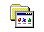

Soul Eater - Battle Resonance
OKOKOK. so one idea i had was to maybe get you the physical copy of this game since psp games r cheap. BUT uhhhhh, the game is in Japanese only. soooo i found the game online in japanese and there are patches that lets you mod the game so its in english localized so you can actually play it and understand it lmao. I tried to play the japanese version but its literally impossible. Heres a tiny tutorial on how to download it lol. I already did the hard part of modding the game with the patch, so i uploaded it so you just gotta download it.
DOWNLOAD HEREINSTRUCTIONS TO GET THE GAME:
1. Go to app store and download "PPSSPP" app
2. Click on the download link, it should download the game from my google drive
3. Click on the 3 little dots, or try and find a download button. it make take a while on ur phone. u could do it on ur laptop then airdrop it to yourself idk. wtv works.
4. When it asks you where you want to download it click, "Save to Files"
5. Click on the folder that says "PPSSPP", then "PSP", then "GAME"
6. Then click save and it should download the game to your "GAME" folder.
7. Open the PPSPP app
8. At the top you should just be able to click "Games" and the game should be there.
9. PLAY DA GAME

can I be your boyfriend?

why would you do that...


yeaaaa so im not the most knowledgable person about anything. so i tried to do my best research about the best place to donate lol. i was unsure how to donate properly and like wut certificates or wtv u get. but it was around $100 which is like 5 trees,,, in my head it was like 1 for each of your family yk,,, idkidkidk it sounds dumb but yea lol.
I emailed a few different places, but this is the only one that responded so it gave me a pretty good feeling. Their website of course seems legit compared to the other places i looked but idk that can be misleading sometimes lol.
maybe im overthinking it but i just really wanted to be sure that i was donating to a good place > uscpr.org
BUT YEA,,,, i stole this idea from ur sister posting a story that one time. I thought it was a cool gift imo also im very unoriginal sooooo.
FR THO i think that its a really cool concept. donating of course but also the cause and thought behind supporting the planting of trees yk. idk if i've written the quote anywhere but it rlly does remind me of this one saying that goes like "A society grows great when old men plant trees in whose shade they shall never sit." I THINK ITS COOL IK ITS SO CRINGE BUT LIKE THINKK ABOUUT ITT. the idea of investing in the future out of selflessness i think is a cool concept and yeaaaa. i hope you liked the gift that will hopefully outlive us all lmao.
TLDR; RANDOM NOTE AB WHY THIS IS SO COOL -> YOOO is this not so cool. ngl i stole the code for all the cool looking windows stuff BUT IT STILL TOOK SO LONG TO DO EVERYTHING AND FIX IT UP BCS THE DUMBASS WHO IS GOOD AT CODING THE ART AND MAKING THIS LOOK PRETTY doesnt know how to code this for different devices. SOOO theoretically now that i fixed it it should work on phones/laptops/tablets hopefully if i did this right. sooo this is still cool asf as fuk it took forever to make and im the best.
TLDR; WUT IS THE POINT OF THIS ->ALSO this is a readme file to explain what the spotify thing is lmao. i basically made a playlist of some songs i think youd like,, so im basically putting you on rn basically.
TLDR; SO MANY SONGS WTF ->BUT this thing has way too many songs,, so i marked my favorite ones U GOTTA LISTEN TO bcs listening to the entire thing would be way too much (putting u on btw). otherwise if ur ever tryna find new music u can use this playlist for that bcs new music w/o having to look for it is nice and the playlist is waaaaaaaaaaaaay too long to listen to it all. so thats it. thats the gift.
TLDR; HOW ITS ORGANIZED -> i basically just went through all my organized playlists and took out my favorite ones that i think u might like? and just threw them all in here. BUT because i hate large unorganized playlists i organized it,, but i also got lazy so part of it is unorganized at the end. but yea use the spotify.exe to "navigate" it lmao.
TLDR; spotify is wrong -> ALSO ALSO ALSO side note,,,, funny reason i made it is partly bcs that dumb spotify blend match was high lmao,,,, ALSO AIR BUDS APPARENTLY SAID we had a 100% music similarity or some shit lmao. seeing that devastated me knowing that my amazing music taste is unoriginal and uncool. BUT REGARDLESS I KNOWW ur gonna like some parts of the playlist so putting u on btw btw btw. i tried to maybe put songs u might not alr know so u can get new music. but if there are songs i know you DEFINITELYY know like newjeans or something i probably just put them in for the vibes ORRR its a song i thought u didnt know. but if u alr kno it then welp ig u alr know :|. but ya. hope u like new music.

!!!
playlist is hereEmo - emo ppl typa music? idk that much good stuff but one song is my favorite lol
WILLOW - <maybe> it's my fault
WILLOW - hover like a GODDESS
Sleeping With Sirens - If You Can't Hang
White ppl music - ngl just random stuff. i would consider white ppl music xD
beabadoobee - Care
Two Door Cinema Club - What You Know
Dominic Fike - Babydoll
Quarters of Change - Rift
beabadoobee - She Plays Bass
boy pablo - wtf
Ralph Castelli - Pretend
Flight Facilities - Crave You
Andrea Chahayed - Belong
JAWNY - Honeypie
JAWNY - adios
sam ray club - chapstick
Malcolm Todd - Earrings
^^ u probably alr kno this STIL FIRE THO ^^
beabadoobee - 10:36
WizTheMc - For A Minute
Silver Warehouse - Silver Warehouse
INOHA - Seventh Heaven
Rocco - Clouds
Nafeesisboujee - Stephanie
j/k rockish? V up beat - a lot of anime stuff lmao
Crystal Tea - There There
Crystal Tea - Minority
Crystal Tea - Moonlight Distortion
Crystal Tea - Karerice
Crystal Tea - Romanticist A.I.
^^ i rlly like this artist lol ^^
SE SO NEON - joke!
FIVE NEW OLD - Happy Sad
SHISHAMO - 中庭の少女たち
Vaundy - 恋風邪にのせて
frederic - Oddloop
Kisnue - BICCOY (Baby I Can′t Concentrate On You)
ano - ちゅ、多様性。
^^ CHAINSAW MAN SONG SHITS FIREE ^^
Eve - Anoko secret
Ado - FREEDOM
Kenshi Yonezu - KICK BACK
ano - イート・スリープ・エスケープ
Midnight Grand Orchestra - 夜を待つよ
U ALR STOLE THIS lmao ^
MAISONdes - けーたいみしてよ
麻婆豆腐 - シロガネ
KANA-BOON - ないものねだり - Revenge THE FIRST TAKE
yama - 麻痺
獅子志司 - Eien hanahadashii
tephe - Neppa
this shit is addicting i wish it was longer ;-;
YUI - again
Eve - 廻廻奇譚
ヨルシカ - 言って。
Ikimonogakari - BAKU
PSYQUI - ヒステリックナイトガール
Dareharu - Flowering
Shiggy Jr. - oyasumi
CANDYGIRL - Uh-Oh
Mega Shinnosuke - Togenkyo To Taxi
reminds me of vaundy
Dareharu - Karma
Vaundy - 花占い
POLKADOT STINGRAY - JET
たかやん - Life is a bitch!
Kenshi Yonezu - 死神
Nagumoyuuki - Stick Candy (feat. Ado)
Eve - Tokyo Ghetto
Ado - All Night Radio
TOOBOE - 錠剤
indigo la End - ラブ (feat. pH-1)
Eve - Inochi No Tabekata
Cö shu Nie - undress me
Ado - Value
up beat up beat electronic? idk wut this is tbh but its fun lol
iiso - Round & Round
Night Tempo - Love Actually
NECTA - Don't sleep!
iiso - Signs
SUMIN - WHAT DO YOU THINK
iiso - Wow Game
FiFi Zhang - So Beautiful So Lonely
BÉBE YANA - Strawberry Kisses
The Deep - Muah!
MIRANI - Make U Mine
Moe Shop - Lovesick
Yves - LOOP (feat. Lil Cherry)
iiso - COMI (Feat. Chillin Homie)
j/k more chill - not so very super up beat but uhh more chill ig? idk idk idk
Crystal Tea - Midnight Bicycle
Crystal Tea - Twinkle Twinkle Little Scar
Lee go do - Knife
Vaundy - 瞳惚れ
tonun - 東京cruisin'
HYUKOH - Wi Ing Wi Ing
this artist has hela good songs
Vaundy - 常熱
Vaundy - 置き手紙
Vaundy - 東京フラッシュ
i used to be addicted to this song vaundy is da goat
Vaundy - life hack
Vaundy - 不可幸力
Vaundy - 踊り子
LOOΠΔ / ODD EYE CIRCLE - Uncover
iri - COME BACK TO MY CITY
Lee go do - People like us
Band Nah - pathetic!
Lee go do - Are you in there
j/k poppy - city pop typa songs? youd understand if u went to japan
Yebit - On-Air
YUKIKA - NEON
YUKIKA - Loving you
YUKIKA - Love in TV World
Miki Matsubara - Wash
Junko Ohashi - テレフォン・ナンバー
j/k even more chill - more chillish songs i think not more chill as in the level of chill is higher than previous but more chill as in we are adding songs that are also chill to the previous songs. maybe some of them are the other type of more chill though as in like they are another level of chillness than previous songs as before. im not good at organizing so who knows
Mega Shinnosuke - Japan
Vaundy - 融解sink
DURDN - Sutetaraii
Colde - Control Me
Loco - Don’t
SE SO NEON - A Long Dream
HYUKOH - Graduation
JUNE - Gas Station
SE SO NEON - Go Back
Western Kite - COUCH
wave to earth - light
cott (콧) - These days
OurR - haaAakkKKK!!!
Milena - Sugardance
youra - MIMI
Lovely Summer Chan - 202 feat. 泉まくら - New Mix
DURDN - Conflict
CIKI - tokki
^^^ ALSO HAS ALL THE BEST SONGS
たかやん - It's okay to envy
Hoody - When The Rain Stops
THE ORGANICS - Dope Tokyo
jeebanoff - We (OUI) (Feat. sogumm)
cott (콧) - HOW YOU FEEL?
Lee go do - Mouse
Apro - Fragile (feat. youra & pH-1) - 2022 Remaster
NewJeans - Cool With You
wave to earth - peach eyes
offonoff - Photograph
offonoff - Dance
^^^ some of the ciki songs u downloaded r covers of this album
LambC - Love Like That
YeYe - ゆらゆら
j/k sad shit - sad sad sad sad feels sad idk the lyrics
OurR - Floor
OurR - Circle
Seori - Running Through The Night
RIO - WASH AWAY
dosii - Underwater
SE SO NEON - Winter 눈
SE SO NEON - Stranger
youra - Sag
Lee go do - Border
Western Kite - dolphin
Western Kite - Why Are My Photos Bad?
youra - Best regards
Meaningful Stone - As if
OurR - Finland (Feat. Sim JaeHyun)
Summer Soul - My Last Teen
OurR - Shade
Meaningful Stone - Night Walk
cott (콧), Luli Lee - null
Western Kite - London
rap mix - random tbh. idk wut type of stuff u like at all tbh BUT here r some of my favorites vv popular ones ez to like.
Don Toliver - Cardigan
Don Toliver - No Photos
Don Toliver - Heaven or Hell
Travis Scott - HOUSTONFORNICATION
Travis Scott - Apple Pie
Mura Masa - Love$ick (feat. A$AP Rocky)
A$AP Rocky - Babushka Boi
Travis Scott - COFFEE BEAN
Playboi Carti - Long Time - Intro
Travis Scott - Days Before Rodeo: The Prayer
Travis Scott - Backyard
Travis Scott - Drugs You Should Try It
Playboi Carti - ILoveUIHateU
best w2e - THE BEST W2E SONGS IMO. not counting the newest album lol. also a random feature but its so fukin good
wave to earth - ocean floor
wave to earth - homesick
wave to earth - dried flower
wave to earth - sunburn
wave to earth - bad
wave to earth - sunny days
wave to earth - daisy.
APRO - To us (feat. wave to earth & WAVY)
random old k/jpop - some random songs, i have a huge ass playlist with everything BUT i chose some of my fav ones some r old some r new idk its just random
GroovyRoom - Yes or No (Feat. 허윤진 of LE SSERAFIM, Crush)
AKMU - 200%
Omoinotake - One Day
LOONA - HULA HOOP
Sori - Touch (feat. Basick)
LOONA/yyxy - love4eva (feat. Grimes)
LOOΠΔ / ODD EYE CIRCLE - Girl Front
LOONA - Heart Attack (츄)
2PM - Hands Up
Jackson Wang - Pretty Please
spanish - spanish. u prob kno all the marias oneBUT I PUT THEM ANYWAY FUK U
Rebe - Wapa wapa wapa wapa wapa wapa
The Marías - Déjate Llevar
The Marías - Un Millón
Cuco - Si Me Voy (with The Marías)
Danny Schiller - Pajaritos
Simon Grossmann - Café Con Leche
Kora - Marte
Juanpalitoschinos - Lo que tú me das
Juanpalitoschinos - Hacerte bien
maye - Tú
The Marías - Ay No Puedo
Daniela Andrade - Ayayai
everything else - got tired of organizing EVEN MORE RANDOM SONGS
OoOo - How About You?
Daniel Caesar - Let Me Go
beabadoobee - Beaches
Peach Tree Rascals - Mariposa - Acoustic
Mac Miller - Come Back to Earth
たかやん - Toy
KozyPop - Instant Date (feat. Kumira & CIKI)
¿Téo? - Belong in the Sun
HEIZE - And July
Ochunism - rainy
Shayne Orok - Death City
ILLENIUM - Good Things Fall Apart (with Jon Bellion)
Post Malone - Stay
Dominic Fike - Mona Lisa (Spider-Man: Across the Spider-Verse)
EI8HT - Silk & Cologne (EI8HT & Offset) - Spider-Verse Remix
015B - My Hair Is Green
Takayoshi - when ur around
HANRORO - Like my groove
Wonder Girls - Rewind
Daniel Caesar - Do You Like Me?
JOY - Hello
Hojean - Bluffin
Kaz Moon - Furious
maye - Yours
VK Blanka - Black Catcher
^^ ACTUALLY THE BEST ANIME SONG EVER. comes from shit black clover tho
beabadoobee - Susie May
OurR - Desert
jisokuryClub - Under the Sea
SE SO NEON - I'm Watching a Loneliness Just Arisen
Meaningful Stone - Fade Away